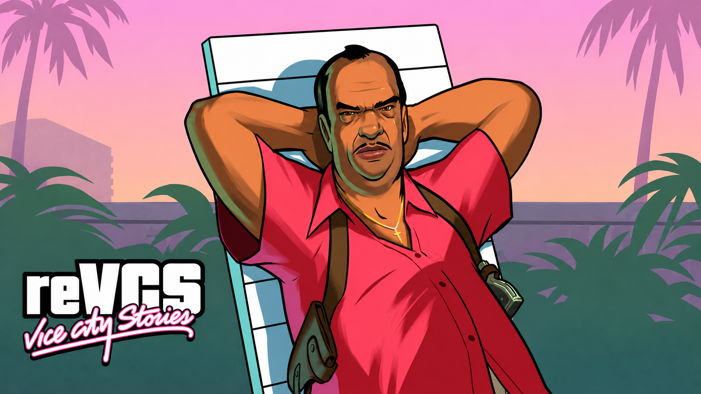

VÍDEO DESTACADO
GRATUITO · NO OFICIAL · ALFA TEMPRANA
El mismo Vice City.
Nuevas posibilidades.
Grand Theft Auto: Vice City Stories — versión nativa para PC
Disfruta de Vice City Stories en PC con reVCS, una versión nativa independiente basada en reVC y librw. Aporta tus propios archivos del juego de PS2, instálalos con reVCS Setup y sigue el desarrollo del proyecto.
Windows 10 / 11 (64 bits) · Necesitas tu propia copia de PS2

EL CAPÍTULO ACTUALALPHA 0.55 / UPDATE 8.4VERSIÓN CON BULLET PHYSICS
01 / EL PROYECTO
Vice City Stories,
reconstruido para PC.
Las calles que recuerdas. Un proyecto nativo para Windows.
reVCS lleva Grand Theft Auto: Vice City Stories a Windows con reVC y librw. El proyecto reconstruye los sistemas de juego propios de VCS y ejecuta los scripts originales de PS2 en una máquina virtual SCM específica.
La versión actual utiliza Bullet Physics e incluye ejecutables nativos x86 y x64. El proyecto sigue en una fase alfa temprana: la jugabilidad, los gráficos, la física, la compatibilidad y el rendimiento evolucionan con cada actualización.
Versiones de Setup y novedades del proyecto01
Un proyecto nativo para PC
Basado en reVC / librw, con ejecutables del juego para Windows x86 y x64.
02
Tu juego, convertido
Los datos originales proceden de tus propios archivos de PS2. No se incluye ninguna imagen del disco.
03
Todavía en desarrollo
Es una alfa. Aún hay aspectos por pulir: envía informes útiles y ayuda a dar forma a las próximas actualizaciones.
02 / VÍDEOS DE DESARROLLO
Mira reVCS en acción
Vice City Stories. De forma nativa en PC.
Descubre la jugabilidad, las demostraciones de desarrollo y los avances de reVCS, desde las primeras presentaciones públicas hasta las mejoras más recientes.

GTA Vice City Stories — Native PC Port (reVCS) | Development Showcase 2026
Ver en YouTube : GTA Vice City Stories — Native PC Port (reVCS) | Development Showcase 2026
reVCS — Progress Showcase & Goofing Around | GTA Vice City Stories on PC
Ver en YouTube : reVCS — Progress Showcase & Goofing Around | GTA Vice City Stories on PC
GTA Vice City stories - completely normal gameplay no commentary
Ver en YouTube : GTA Vice City stories - completely normal gameplay no commentaryTodos los vídeos están alojados en YouTube. Si la reproducción integrada no está disponible, elige «Ver en YouTube».
MENOS PREPARATIVOS. MÁS VICE CITY.
Tu camino
de vuelta.
Un solo lugar para instalar, gestionar actualizaciones, cuidar tus partidas guardadas e iniciar el juego.
- Modo Quick para lo esencial
- Modo Extended para mayor control
- Paquetes locales e instalación sin conexión
- Importación opcional de paquetes de texturas PCSX2
LA APLICACIÓN REAL PARA WINDOWS 1.34.3 BETA

03 / DEL DISCO AL ESCRITORIO
Tres pasos.
Y estarás en casa.
- 01
Prepara tu copia de PS2.
Prepara tu propia ISO de Vice City Stories para PS2 o la carpeta extraída del disco. Mantén intacta la estructura de carpetas.
- 02
Deja que Setup se encargue.
Extrae el ZIP de arranque, ejecuta Setup y elige el origen y una carpeta de destino vacía. Los componentes del conversor que falten se descargarán de GitHub.
- 03
Haz tuya la ciudad.
La conversión instala la versión base Update 8. Elige Check Game Updates para instalar la actualización acumulativa 8.4; después inicia reVCS y ajusta la resolución en el juego. En el modo Extended puedes importar tu propio paquete de texturas PCSX2 compatible.
Los archivos de origen se leen localmente y no se modifican. La compatibilidad se comprueba por recurso; un archivo de idioma distinto no provoca el rechazo automático de todo el disco.
04 / TU BILLETE DE VUELTA
La ciudad
te espera.
Descarga primero el pequeño kit de arranque.
Setup descarga los componentes del conversor cuando hacen falta.
SETUP 1.34.3 BETA · ALPHA 0.55 UPDATE 8.4
reVCS Setup
Windows 10 / 11 · Instalador de 64 bits
¿Qué cambió en Update 8.4?
Un paquete acumulativo para Update 8, 8.1, 8.2 u 8.3. Corrige los controles del camión de bomberos, los pasajeros de helicóptero, la recuperación de la cámara de saltos y los semáforos. Incluye correcciones anteriores y compatibilidad de partidas EU/US. La etapa de color del mundo se ha retirado hasta compararla con PS2. Notas de la versión.
¿Qué cambió en Update 8.2?
Añade repeticiones con F1; mejora las colisiones de rampas, el acceso y manejo de JetSki, los vuelos mediante scripts y la limpieza de modelos. Instálala desde la página Updates de Setup. Notas de la versión.
¿Qué cambió en Update 8.1?
Corrige un fallo de inicio con Proton causado por espacios al final de los datos de aparición de NPC. En Setup: Updates → Check game updates → Apply available game updates. Notas de la versión.
¿Qué cambió en Setup 1.34.3?
Windows Direct3D 9 es la opción predeterminada; DXVK es una opción Vulkan explícita. Play reVCS usa x86 por defecto y guarda la elección x86/x64 en Launch Options. Incluye el nuevo logotipo oficial y un icono rediseñado. Conserva la confirmación manual de actualizaciones, las preferencias y las opciones de copia de seguridad.
ANTES DE SALIR A LA CALLE
Algunas cosas
que debes saber.
¿reVCS es gratuito?
Sí. reVCS y su instalador se distribuyen gratis. Debes aportar tu propia copia de Grand Theft Auto: Vice City Stories para PS2.
¿reVCS es un emulador?
No. reVCS es un proyecto nativo para PC basado en reVC y librw. Reconstruye los sistemas del juego y utiliza los datos originales de PS2 aportados por el usuario.
¿Necesito el juego original?
Sí. Aporta tu propia ISO de Vice City Stories para PS2 o la carpeta extraída del disco. Setup convierte esos archivos localmente. Ni esta web ni el kit de arranque proporcionan una imagen del disco de PS2.
¿Qué versiones de PS2 puedo usar?
Las pruebas de conversión incluyen fuentes EU, US y una versión modificada en polaco. Se validó una instalación EU completa con Setup 1.33; las fuentes US y polacas superaron las pruebas de conversión de recursos. Los demás discos se comprueban por sus recursos, no con una lista fija de hashes de ISO completas. Esto no garantiza la conversión de todos los discos modificados.
¿Puedo instalar sin conexión a Internet?
Sí. Descarga los 13 componentes BIN, el ZIP de arranque y version.xml de la misma versión. Extrae el ZIP y coloca los BIN junto a Setup. Activa el modo sin conexión y elige el origen local de PS2.
¿Cómo se actualizan el juego y Setup?
Las actualizaciones se comprueban manualmente. Para el juego: Welcome → Check Game Updates → Install Update. Para el instalador: Check Setup Updates en Welcome y confirma la descarga y sustitución verificada del EXE. El acceso en línea está activado por defecto; también hay paquetes sin conexión.
¿Se incluyen paquetes de texturas?
No. Las texturas de reemplazo de PCSX2 son opcionales y las aporta el usuario. Elige tu paquete ZIP o 7z compatible en el modo Extended.
¿Es el juego terminado?
No. reVCS es un proyecto de fans en alfa y en desarrollo activo. Hay limitaciones conocidas y pruebas de la comunidad en curso. Setup 1.34.3 mejora el instalador y el actualizador; Update 8.4 para el juego está disponible por separado.
¿Qué incluyo en un informe de error?
Describe los pasos, las versiones del juego y de Setup, la edición del disco de origen y el resultado esperado. Incluye el registro pertinente y una grabación breve si resulta útil. Elimina los datos personales antes de compartir registros.
Informar de un problema del instaladorDE LA COMUNIDAD, PARA LA COMUNIDAD
Una carta de amor a Vice City Stories.
reVCS es un proyecto de fans independiente dirigido por DasIstEin20. Los agentes de programación con IA y un asistente de IA en el navegador contribuyen a la investigación, la implementación, las herramientas y las pruebas, apoyándose en las herramientas, el conocimiento y las opiniones de la comunidad.
Nada de esto existiría sin los creadores de Vice City Stories ni los años de trabajo, la paciente ingeniería inversa y el conocimiento compartido libremente por la comunidad. Con profundo agradecimiento a:
- Rockstar Games, Rockstar Leeds y Rockstar NorthPor crear Grand Theft Auto: Vice City Stories, el juego que nos encanta y que inspiró este proyecto comunitario.
- Los equipos y colaboradores de re3 / reVCPor las bases de GTA reconstruidas mediante ingeniería inversa que hicieron posible este trabajo.
- aap y librw / librwgta / StoriesConv — colaboradoresPor el renderizado, el estudio de los formatos de Stories y la conversión de los datos originales.
- GTA SA Reversed — colaboradoresPor los sistemas de San Andreas reconstruidos y la investigación compartida sobre el motor.
- jessicanataliagta y PSPRecomp — colaboradoresPor la recompilación estática de PSP y el trabajo de investigación y referencia de VCS.
- BlackLineInteractive y SHO-GTA-VCS-PS2Recomp — colaboradoresPor la investigación sobre recompilación de PS2 y el proyecto de referencia compartido de Silent Hill Origins / GTA VCS.
- gothamor y GTA VCS Recomp — colaboradoresPor la recompilación de VCS para PS2 y una valiosa referencia del comportamiento del juego original.
- OgstraPor el trabajo compartido en física y temporización independiente de la tasa de fotogramas.
- Bullet Physics — colaboradoresPor la biblioteca de física utilizada en esta versión.
- Sanny Builder — comunidadPor la documentación y la investigación compartidas sobre scripts.
- PCSX2 — colaboradoresPor la investigación sobre PS2 y las herramientas de texturas que ayudan a la comunidad.
- OpenAL Soft y Zstandard — colaboradoresPor las bibliotecas de audio y compresión del proyecto.
- Modders, investigadores de ingeniería inversa, creadores de texturas, testers y jugadoresPor compartir descubrimientos, informar de errores y mantener vivo Vice City Stories.
«A la comunidad de modding e ingeniería inversa de GTA: sin vuestro esfuerzo, las herramientas que creáis y el conocimiento que compartís, reVCS no sería posible. Gracias de todo corazón. ❤️»